Slide 1 / 28
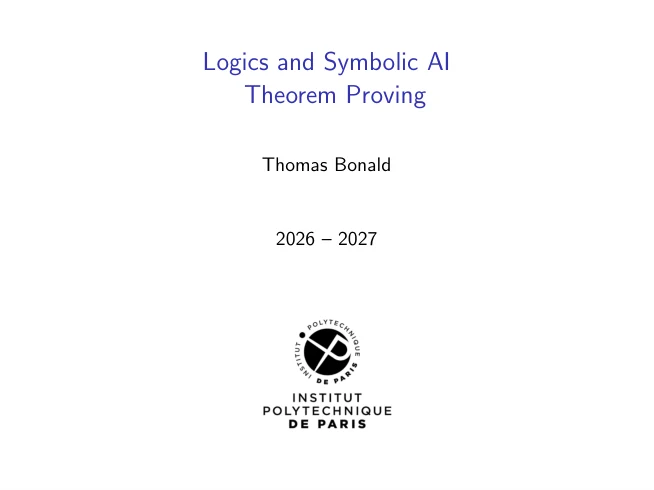
Slide text
Logics and Symbolic AI Theorem Proving Thomas Bonald 2026 – 2027
Slide 2 / 28
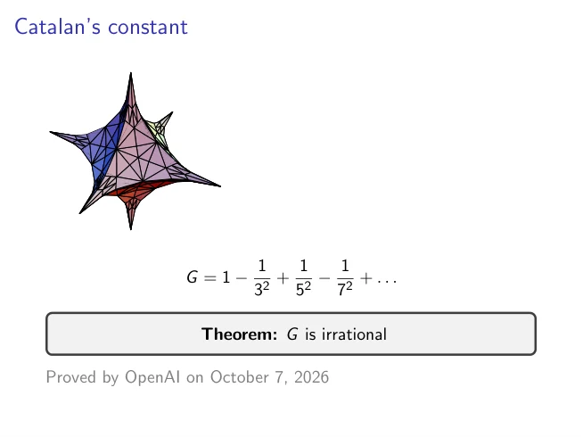
Slide text
Catalan’s constant G = 1 −1 32 + 1 52 −1 72 + . . . Theorem: G is irrational Proved by OpenAI on October 7, 2026
Slide 3 / 28
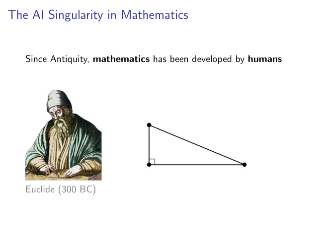
Slide text
The AI Singularity in Mathematics Since Antiquity, mathematics has been developed by humans Euclide (300 BC)
Slide 4 / 28
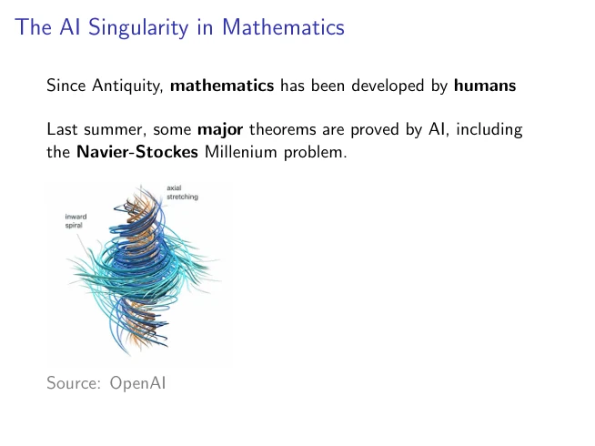
Slide text
The AI Singularity in Mathematics Since Antiquity, mathematics has been developed by humans Last summer, some major theorems are proved by AI, including the Navier-Stockes Millenium problem. Source: OpenAI
Slide 5 / 28
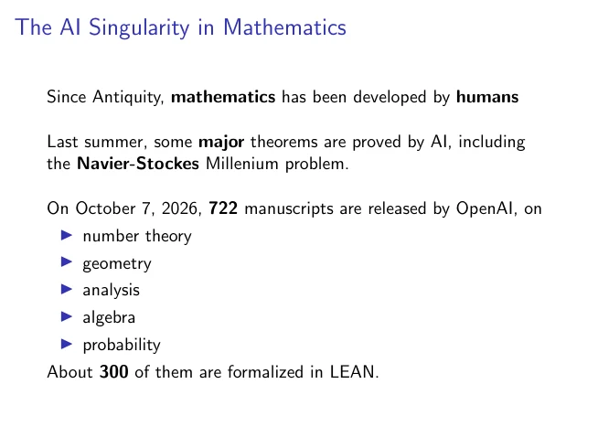
Slide text
The AI Singularity in Mathematics Since Antiquity, mathematics has been developed by humans Last summer, some major theorems are proved by AI, including the Navier-Stockes Millenium problem. On October 7, 2026, 722 manuscripts are released by OpenAI, on ▶number theory ▶geometry ▶analysis ▶algebra ▶probability About 300 of them are formalized in LEAN.
Slide 6 / 28
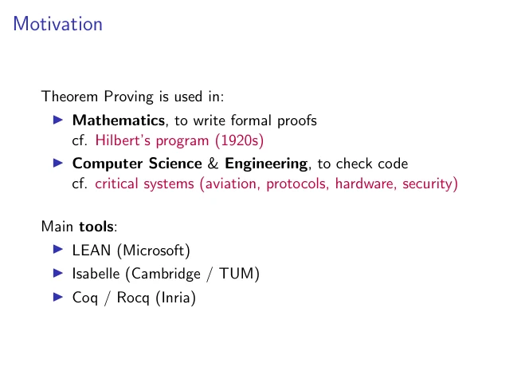
Slide text
Motivation Theorem Proving is used in: ▶Mathematics, to write formal proofs cf. Hilbert’s program (1920s) ▶Computer Science & Engineering, to check code cf. critical systems (aviation, protocols, hardware, security) Main tools: ▶LEAN (Microsoft) ▶Isabelle (Cambridge / TUM) ▶Coq / Rocq (Inria)
Slide 7 / 28
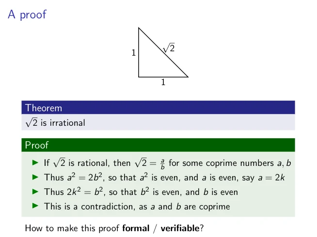
Slide text
A proof √ 2 1 1 Theorem √ 2 is irrational Proof ▶If √ 2 is rational, then √ 2 = a b for some coprime numbers a, b ▶Thus a2 = 2b2, so that a2 is even, and a is even, say a = 2k ▶Thus 2k2 = b2, so that b2 is even, and b is even ▶This is a contradiction, as a and b are coprime How to make this proof formal / verifiable?
Slide 8 / 28
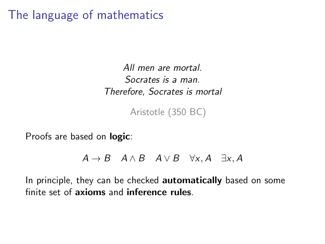
Slide text
The language of mathematics All men are mortal. Socrates is a man. Therefore, Socrates is mortal Aristotle (350 BC) Proofs are based on logic: A →B A ∧B A ∨B ∀x, A ∃x, A In principle, they can be checked automatically based on some finite set of axioms and inference rules.
Slide 9 / 28
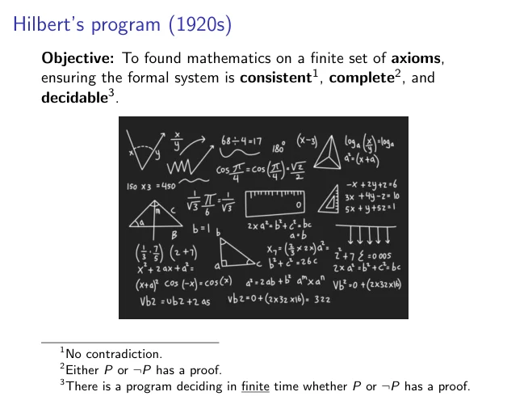
Slide text
Hilbert’s program (1920s) Objective: To found mathematics on a finite set of axioms, ensuring the formal system is consistent1, complete2, and decidable3. 1No contradiction. 2Either P or ¬P has a proof. 3There is a program deciding in finite time whether P or ¬P has a proof.
Slide 10 / 28
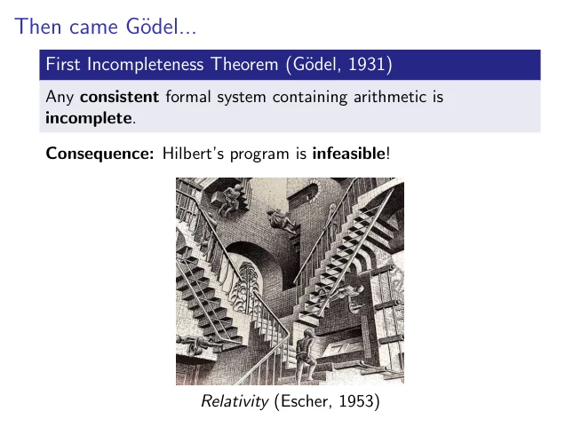
Slide text
Then came G¨odel... First Incompleteness Theorem (G¨odel, 1931) Any consistent formal system containing arithmetic is incomplete. Consequence: Hilbert’s program is infeasible! Relativity (Escher, 1953)
Slide 11 / 28
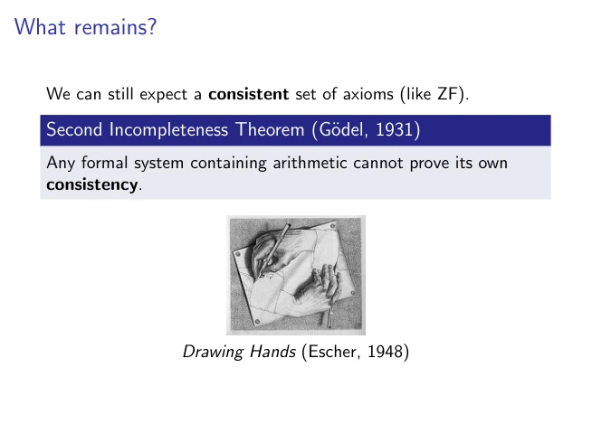
Slide text
What remains? We can still expect a consistent set of axioms (like ZF). Second Incompleteness Theorem (G¨odel, 1931) Any formal system containing arithmetic cannot prove its own consistency. Drawing Hands (Escher, 1948)
Slide 12 / 28
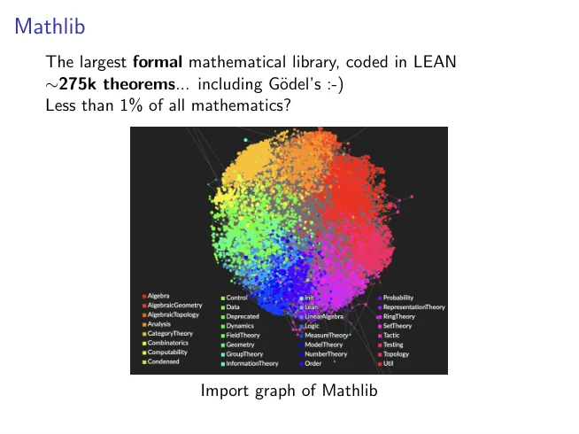
Slide text
Mathlib The largest formal mathematical library, coded in LEAN ∼275k theorems... including G¨odel’s :-) Less than 1% of all mathematics? Import graph of Mathlib
Slide 13 / 28
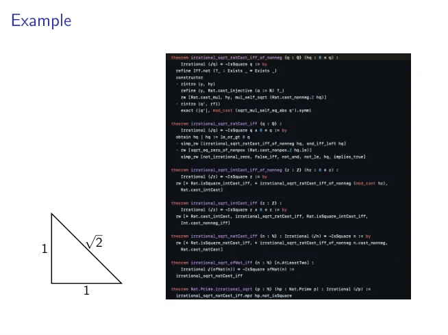
Slide text
Example √ 2 1 1
Slide 14 / 28
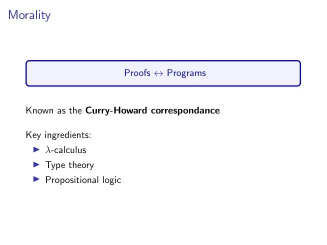
Slide text
Morality Proofs ↔Programs Known as the Curry-Howard correspondance Key ingredients: ▶λ-calculus ▶Type theory ▶Propositional logic
Slide 15 / 28
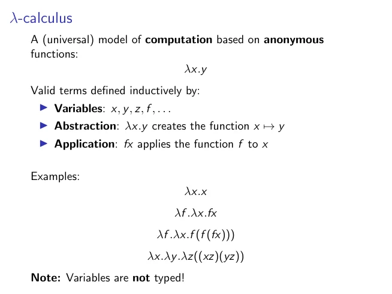
Slide text
λ-calculus A (universal) model of computation based on anonymous functions: λx.y Valid terms defined inductively by: ▶Variables: x, y, z, f , . . . ▶Abstraction: λx.y creates the function x 7→y ▶Application: fx applies the function f to x Examples: λx.x λf .λx.fx λf .λx.f (f (fx))) λx.λy.λz((xz)(yz)) Note: Variables are not typed!
Slide 16 / 28
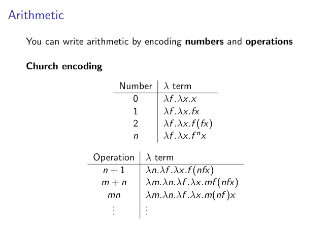
Slide text
Arithmetic You can write arithmetic by encoding numbers and operations Church encoding Number λ term 0 λf .λx.x 1 λf .λx.fx 2 λf .λx.f (fx) n λf .λx.f nx Operation λ term n + 1 λn.λf .λx.f (nfx) m + n λm.λn.λf .λx.mf (nfx) mn λm.λn.λf .λx.m(nf )x ... ...
Slide 17 / 28
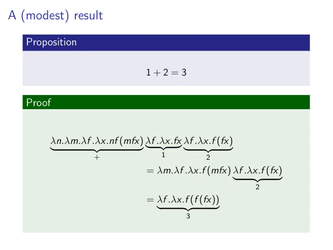
Slide text
A (modest) result
Proposition
1 + 2 = 3
Proof
λn.λm.λf .λx.nf (mfx)
|
{z
}
+
λf .λx.fx
|
{z
}
1
λf .λx.f (fx)
|
{z
}
2
= λm.λf .λx.f (mfx) λf .λx.f (fx)
|
{z
}
2
= λf .λx.f (f (fx))
|
{z
}
3
Slide 18 / 28
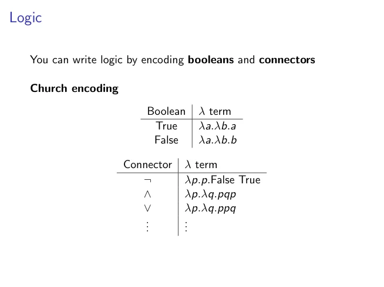
Slide text
Logic You can write logic by encoding booleans and connectors Church encoding Boolean λ term True λa.λb.a False λa.λb.b Connector λ term ¬ λp.p.False True ∧ λp.λq.pqp ∨ λp.λq.ppq ... ...
Slide 19 / 28
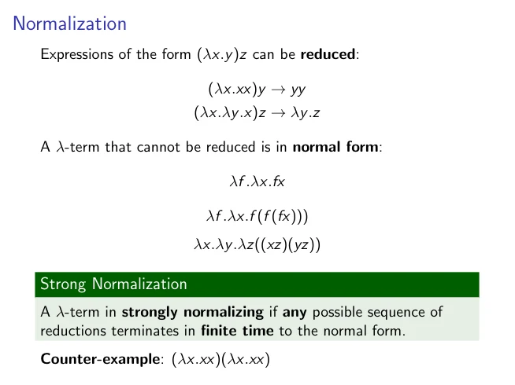
Slide text
Normalization Expressions of the form (λx.y)z can be reduced: (λx.xx)y →yy (λx.λy.x)z →λy.z A λ-term that cannot be reduced is in normal form: λf .λx.fx λf .λx.f (f (fx))) λx.λy.λz((xz)(yz)) Strong Normalization A λ-term in strongly normalizing if any possible sequence of reductions terminates in finite time to the normal form. Counter-example: (λx.xx)(λx.xx)
Slide 20 / 28
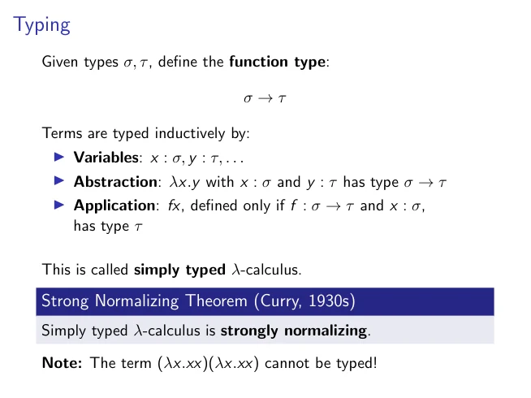
Slide text
Typing Given types σ, τ, define the function type: σ →τ Terms are typed inductively by: ▶Variables: x : σ, y : τ, . . . ▶Abstraction: λx.y with x : σ and y : τ has type σ →τ ▶Application: fx, defined only if f : σ →τ and x : σ, has type τ This is called simply typed λ-calculus. Strong Normalizing Theorem (Curry, 1930s) Simply typed λ-calculus is strongly normalizing. Note: The term (λx.xx)(λx.xx) cannot be typed!
Slide 21 / 28
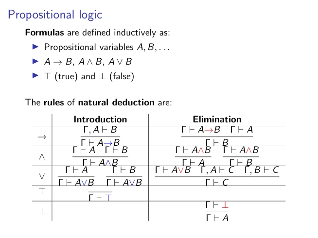
Slide text
Propositional logic Formulas are defined inductively as: ▶Propositional variables A, B, . . . ▶A →B, A ∧B, A ∨B ▶⊤(true) and ⊥(false) The rules of natural deduction are: Introduction Elimination → Γ, A ⊢B Γ ⊢A→B Γ ⊢A→B Γ ⊢A Γ ⊢B ∧ Γ ⊢A Γ ⊢B Γ ⊢A∧B Γ ⊢A∧B Γ ⊢A Γ ⊢A∧B Γ ⊢B ∨ Γ ⊢A Γ ⊢A∨B Γ ⊢B Γ ⊢A∨B Γ ⊢A∨B Γ, A ⊢C Γ, B ⊢C Γ ⊢C ⊤ Γ ⊢⊤ ⊥ Γ ⊢⊥ Γ ⊢A
Slide 22 / 28
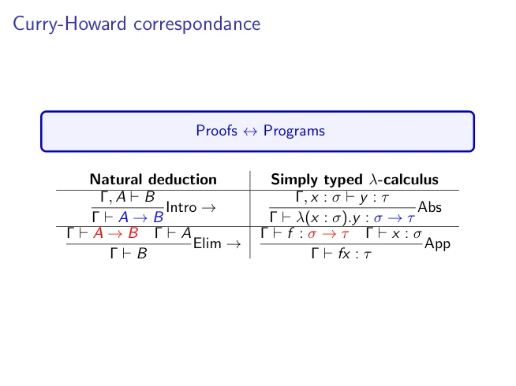
Slide text
Curry-Howard correspondance Proofs ↔Programs Natural deduction Simply typed λ-calculus Γ, A ⊢B Γ ⊢A →B Intro → Γ, x : σ ⊢y : τ Γ ⊢λ(x : σ).y : σ →τ Abs Γ ⊢A →B Γ ⊢A Γ ⊢B Elim → Γ ⊢f : σ →τ Γ ⊢x : σ Γ ⊢fx : τ App
Slide 23 / 28
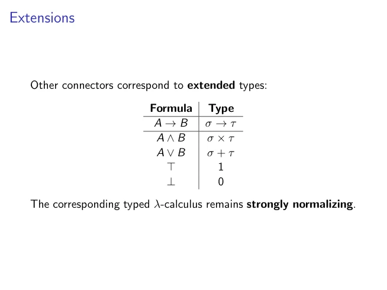
Slide text
Extensions Other connectors correspond to extended types: Formula Type A →B σ →τ A ∧B σ × τ A ∨B σ + τ ⊤ 1 ⊥ 0 The corresponding typed λ-calculus remains strongly normalizing.
Slide 24 / 28
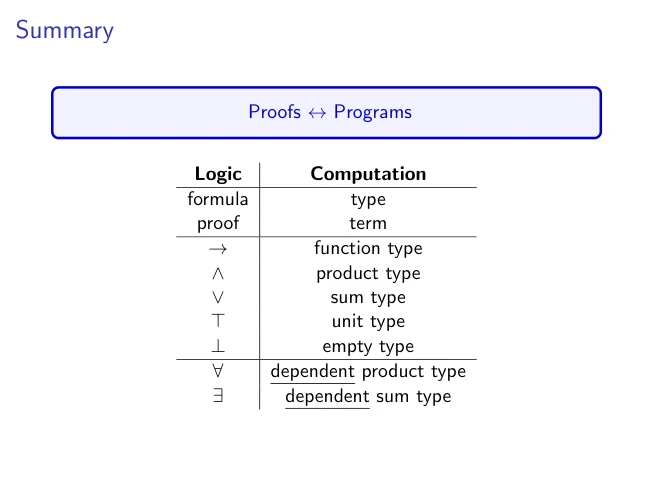
Slide text
Summary Proofs ↔Programs Logic Computation formula type proof term → function type ∧ product type ∨ sum type ⊤ unit type ⊥ empty type ∀ dependent product type ∃ dependent sum type
Slide 25 / 28
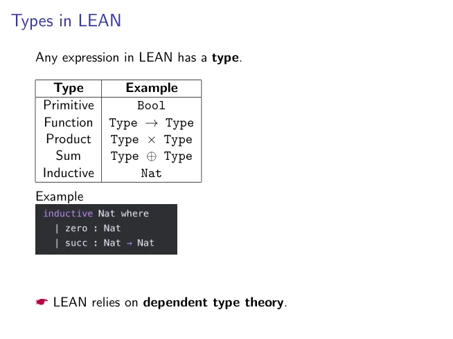
Slide text
Types in LEAN Any expression in LEAN has a type. Type Example Primitive Bool Function Type →Type Product Type × Type Sum Type ⊕Type Inductive Nat Example ☛LEAN relies on dependent type theory.
Slide 26 / 28
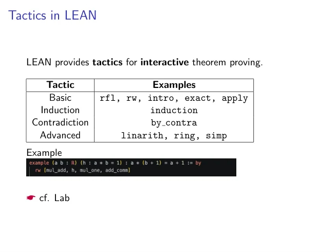
Slide text
Tactics in LEAN LEAN provides tactics for interactive theorem proving. Tactic Examples Basic rfl, rw, intro, exact, apply Induction induction Contradiction by contra Advanced linarith, ring, simp Example ☛cf. Lab
Slide 27 / 28
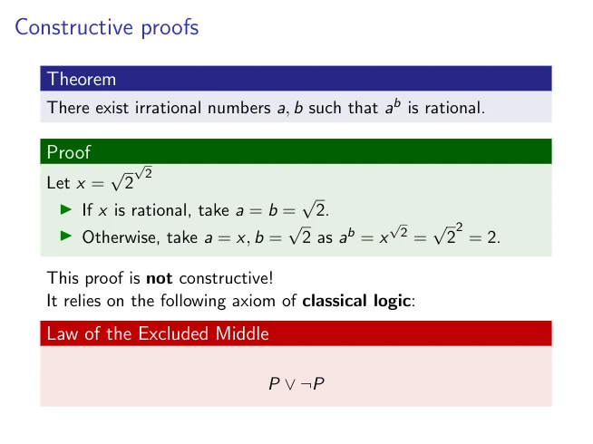
Slide text
Constructive proofs Theorem There exist irrational numbers a, b such that ab is rational. Proof Let x = √ 2 √ 2 ▶If x is rational, take a = b = √ 2. ▶Otherwise, take a = x, b = √ 2 as ab = x √ 2 = √ 2 2 = 2. This proof is not constructive! It relies on the following axiom of classical logic: Law of the Excluded Middle P ∨¬P
Slide 28 / 28
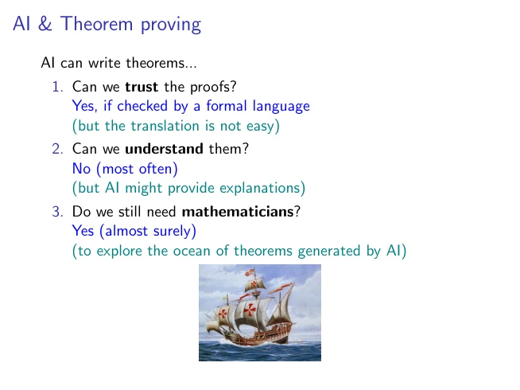
Slide text
AI & Theorem proving AI can write theorems... 1. Can we trust the proofs? Yes, if checked by a formal language (but the translation is not easy) 2. Can we understand them? No (most often) (but AI might provide explanations) 3. Do we still need mathematicians? Yes (almost surely) (to explore the ocean of theorems generated by AI)